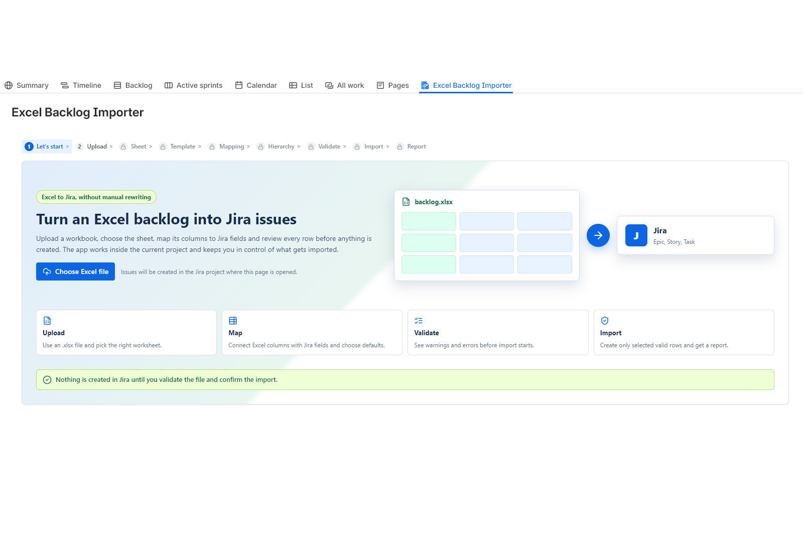

Step 1Upload XLSX
Start from the workbook your team already uses.
Create and update Jira issues from XLSX files with reusable field mappings, validation, previews and import reports.

Example: guided import flow inside Jira Cloud
Discovery workshops, client requirements, estimates, sales handovers and migration sheets often start in Excel. Native CSV import is useful, but teams can lose time cleaning files, repeating mappings and checking risky bulk changes manually.
A guided workflow helps teams review the file, validate data and decide what should be created or updated.
Start from the workbook your team already uses.
Select the sheet and header row that contain backlog data.
Connect Excel columns to Jira fields and supported custom fields.
Check required fields, invalid values and duplicate handling before import.
Review what will happen before Jira issues are changed.
Create new Jira issues or update matching issues from repeated uploads.
Keep an import report for review and troubleshooting.
Clear capabilities for teams moving structured Excel backlog data into Jira Cloud.
Use Excel files directly instead of converting them to CSV first.
Choose the worksheet and header row for the backlog data.
Reuse saved worksheet and mapping setup for repeated files where available.
Map Excel columns to Jira fields and supported custom field types.
Catch missing summaries and invalid values before import.
Import under a selected parent issue where Jira configuration supports it.
Built for workflows such as Epic to Story to Sub-task imports as product rollout and Jira hierarchy allow.
Use repeat imports to update matching Jira issues instead of creating duplicates.
Keep operational import records for review and duplicate handling.
Use stable row identity to avoid creating the same work item twice.
Review and export import results after the run.
Prepared for Jira Cloud teams evaluating apps through Atlassian Marketplace.
Jira CSV import is powerful, but it is not always the fastest workflow for teams that already manage backlog data in Excel.
| Workflow area | Native CSV import | Excel Backlog Importer |
|---|---|---|
| Input format | CSV files after spreadsheet export. | Excel XLSX workbook import. |
| Spreadsheet cleanup | Often requires file preparation and CSV-safe formatting. | Designed to keep the Excel workflow closer to the original handover file. |
| Reusable mapping | Mapping reuse depends on admin workflow and file discipline. | Designed for saved setup and repeated spreadsheet imports. |
| Validation before import | Available in the import flow, but not tailored to recurring Excel handovers. | Guided validation before selected rows are imported. |
| Preview | Works in an admin-oriented import process. | Preview and row selection are central to the product flow. |
| Hierarchy import | Possible with careful CSV preparation and Jira configuration. | Designed for controlled parent-based and structured backlog imports where supported. |
| Updating existing issues | Possible with careful identifiers and admin process. | Designed for repeat uploads that update matching Jira issues. |
| Import history | Usually handled outside the import workflow. | Import metadata and reports support review and troubleshooting. |
| Report export | Depends on process and admin handling. | Designed to provide an import report after the run. |
Practical spreadsheet-to-Jira workflows for delivery teams.
Move customer-provided requirements from Excel into a Jira project after review.
Convert workshop notes and scoped backlog rows into Jira issues without copy-paste.
Turn accepted estimate rows into delivery work when a project starts.
Move teams away from spreadsheet-based tracking into a structured Jira backlog.
Create many issues in a controlled flow with validation and preview.
Refresh descriptions, estimates, priorities or labels after stakeholder review.
Designed for structured backlog imports where hierarchy rules and Jira configuration support the intended relationships.
Built for people responsible for turning spreadsheet-based planning into Jira work.
Move project scope into Jira without rebuilding backlog rows manually.
Validate requirement spreadsheets before they become Jira issues.
Help teams start sprints from a cleaner backlog handover.
Offer a focused import path without sending every spreadsheet through a broad admin CSV process.
Standardize client backlog handovers across projects.
We prefer precise expectations over inflated claims.
Short answers for teams evaluating Excel to Jira imports.
Jira's native import workflow is commonly CSV-based. This app is designed for XLSX files so teams do not have to rebuild Excel backlogs as CSV first.
Use it when your team receives recurring Excel backlogs and needs guided mapping, validation, preview and import history around that workflow.
The product is designed for structured backlog imports such as Epic to Story to Sub-task workflows where Jira configuration and product rollout support the hierarchy.
Yes, repeat imports can update matching Jira issues when the file identity and row identity allow the app to recognize existing work.
The app is designed to map supported Jira fields and supported custom field types. Exact support depends on Jira field configuration.
Saved setup can help reuse worksheet, header row and mapping choices for repeated imports.
Yes. Preview and validation are central to the controlled import flow.
Yes. The product is designed for Jira Cloud and Atlassian Forge.
Email support.jira@mederak.pl with your Jira site context and import scenario.
Pricing and trial availability are handled through Atlassian Marketplace. If the listing is not public yet, use the access request flow.
Marketplace pricing will be handled through Atlassian Marketplace when the public listing is available.
Try the Excel-first import workflow or request access if the Marketplace listing is still in rollout.